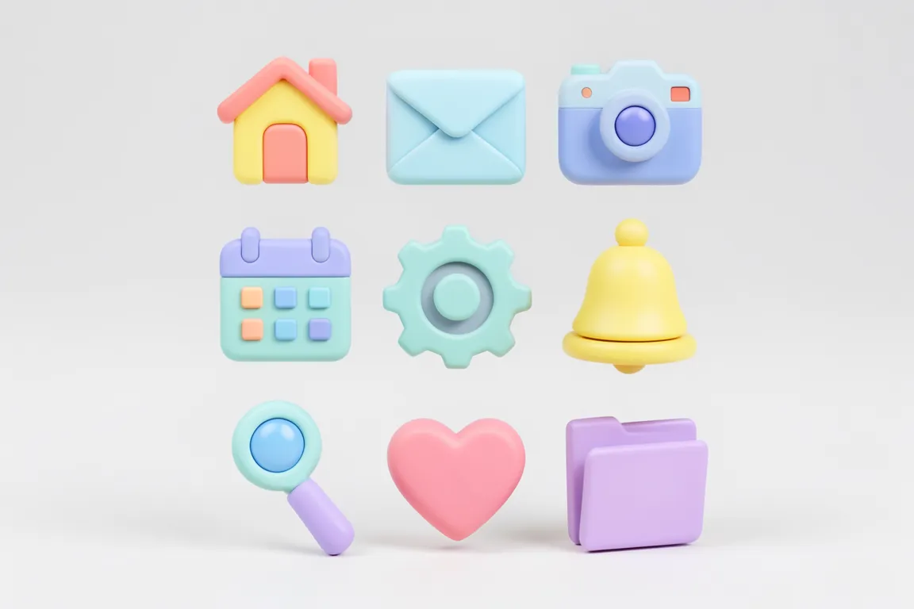

Ikoner gjengitt i 3D med myke, matte, leireaktige materialer, store runde hjørner og en myk skygge. De gir dybden tilbake etter de flate årene, men med leketøysaktig enkelhet og ingen ekte tekstur.

Kjerneidé
Etter et tiår med flate glyfer kan et ikon få volum igjen hvis formene holdes enkle, runde og myke som et leketøy.
Designprinsipper
Modeller hver gjenstand av enkle volumer med store avrundinger: en radius på 15–25 % av gjenstandens størrelse.
Bruk et matt eller satinert materiale med mykt lys under overflaten; ingen hard glans.
Lys gjenstanden med ett stort, mykt hovedlys fra øverst til venstre og et fyllys på 30–50 %.
Bruk et tre-kvarts-perspektiv fra 15–30° ovenfra.
Bruk 3 til 6 mettede pastellfarger per ikon, med myke gradienter fra lyset.
Lever hvert ikon som PNG på 256 px eller mer, med gjennomsiktig bakgrunn.